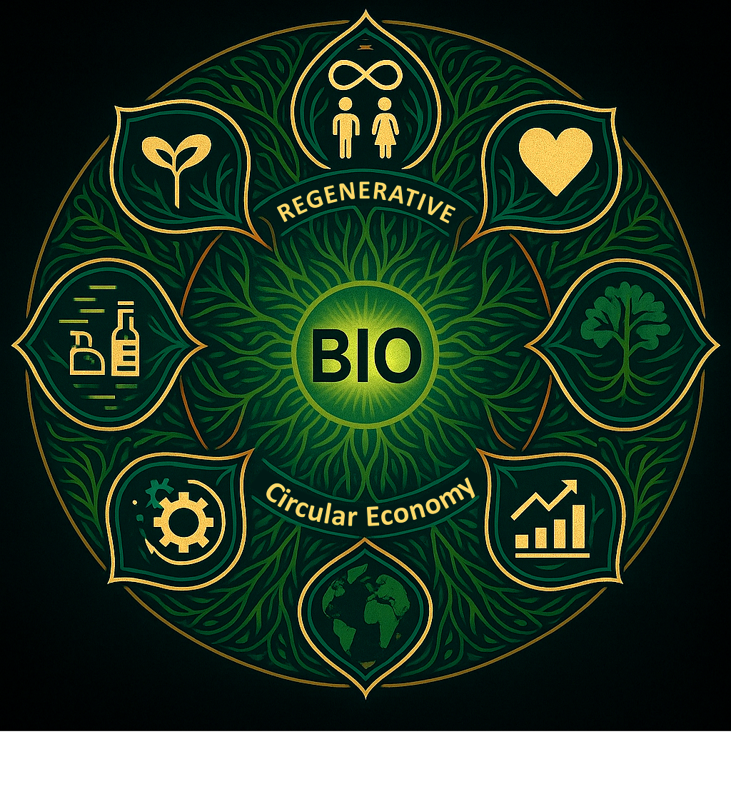

🌐 BIO Integration Panel
“Each territory heard is a restored link. BIO is present where repair is urgent.”

📍 Active Units (MCFFPs)
Rural Area — Cycle successfully completed
Public Hospital — In finalization process
Local Market — Returnable collection in progress
🔄 Current Cycle
Production → Filling → Finalization → Distribution → Return
📡 Main Industry
Continuous operation. Connected to MCFFPs. Ready for expansion.
💬 BIO says:
“A well-made batch doesn’t just clean the house. It also cleans the past.”